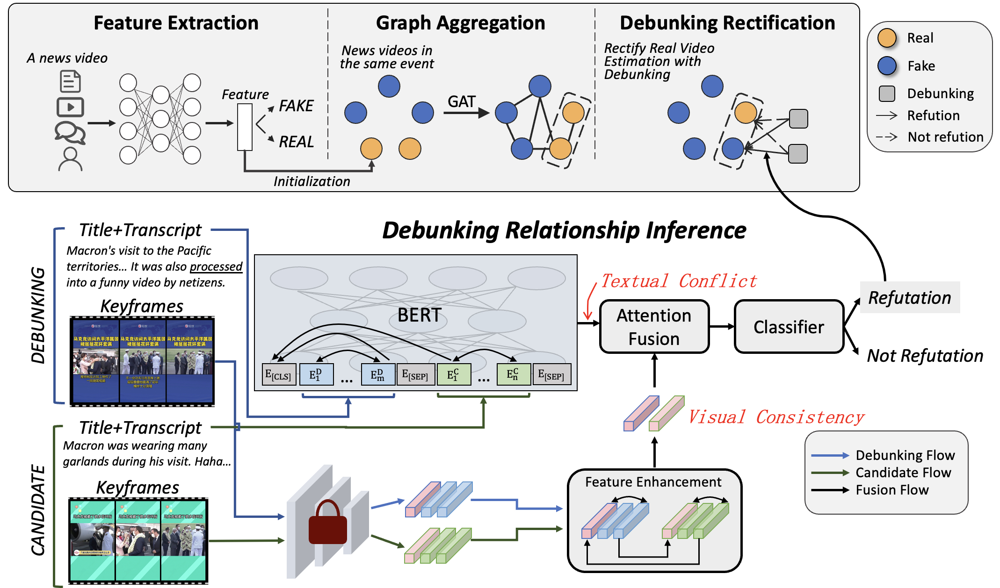
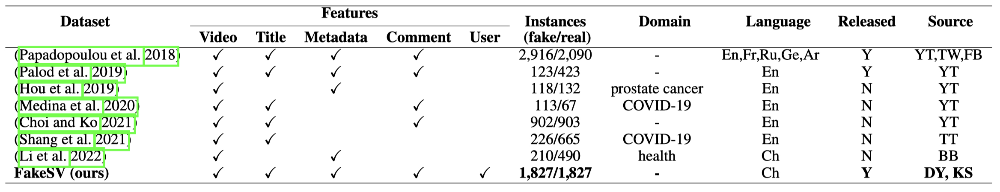
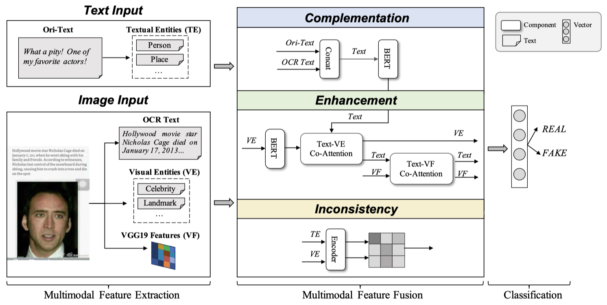
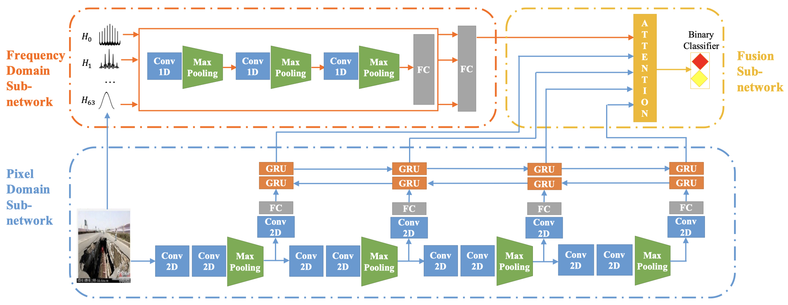
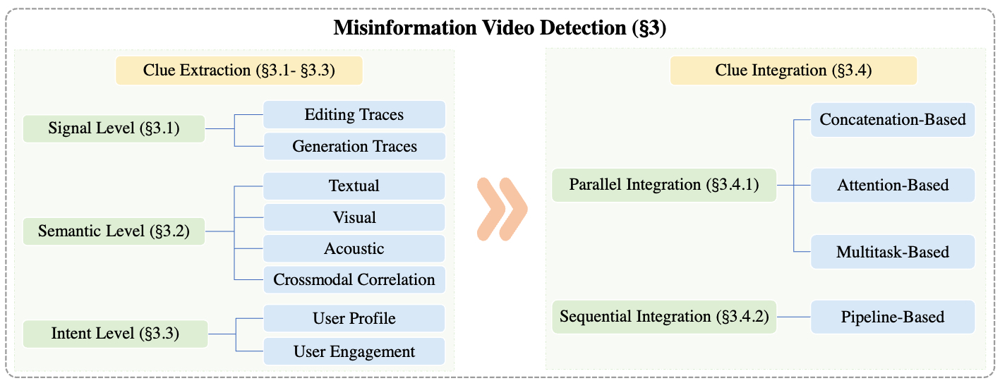

I received my Ph.D. degree at this June in the Institute of Computing Technology , Chinese Academy of Sciences, supervised by Prof. Juan Cao.
I had a one-year visiting study in NExT++ , National University of Singapore, supervised by Prof. Tat-Seng Chua.
I’m going to join the Centre for Trusted Internet and Community, NUS as a postdoctoral research fellow, under the supervision of Prof. Wynne Hsu and Prof. Mong Li Lee.
My research interests mainly lie in defending misinformation, multimedia content analysis, and social media mining.
News
[July 2023] Invited to serve as a PC Member for AAAI 2024!
[May 2023] One first-author paper about neighbor-enhanced fake news video detection got accepted by ACL Findings 2023!
[Feburary 2023] Released the FakeSV benchmark dataset!
[November 2022] One first-author paper about the Chinese short video fake news benchmark got accepted by AAAI 2023!
[November 2022] One co-author paper about image privacy preservation got accepted by AAAI 2023!
[July 2022] Invited to serve as a PC Member for AAAI 2023!
Selected Publications

Two Heads Are Better Than One: Improving Fake News Video Detection by Correlating with Neighbors
Peng Qi,
Yuyang Zhao,
Yufeng Shen,
Wei Ji,
Juan Cao,
Tat-Seng Chua ACL Findings, 2023PDF
This paper proposes a model-agnosticcross-sample framework NEED for detecting fake news videos,
which utilizes the neighbor relationship
between the related news videos in the same event and thus can largely improve the performance
of existing single-sample detectors. This paper is a successful attempt to combine automatic
fake news detection and fact-checking, and firstly proves the effectiveness of debunking videos in detection.

FakeSV: A Multimodal Benchmark with Rich Social Context for Fake News Detection on Short Video Platforms
Peng Qi,
Yuyan Bu,
Juan Cao,
Wei Ji,
Ruihao Shui,
Junbin Xiao,
Danding Wang,
Tat-Seng Chua AAAI, 2023PDF /
Code
We construct the largest Chinese fake news short video dataset, namely FakeSV.
This dataset contains complete news contents and rich social context under different events, and thus can support a wide range of research tasks related to fake news.
It firstly provides abundant debunking videos accompanying the fake and real news videos.
We provide exploratory multi-perspective data analysis,
which reveals some interesting and insightful phenomenons.
Moreover, we design a new multimodal detection model as the SOTA method in this benchmark.
We also re-implement 11 single-modal and 4 multimodal methods as baseline methods.

Improving Fake News Detection by Using an Entity-enhanced Framework to Fuse Diverse Multimodal Clues
Peng Qi,
Juan Cao,
Xirong Li,
Huan Liu,
Qiang Sheng,
Xiaoyue Mi,
Qin He,
Yongbiao Lv,
Chenyang Guo,
Yingchao Yu
MM, 2021PDF
This paper explores three valuable text-image correlations in multimodal fake news: entity inconsistency, mutual enhancement and text complementation.
For better multimodal reasoning, this paper firstly import the visual news entities into multimodal fake news detection, which helps to understand the news-related high-level semantics of images and bridge the high-level semantic correlations of news text and images.
Exploring the Role of Visual Content in Fake News Detection
Juan Cao,
Peng Qi,
Qiang Sheng,
Tianyun Yang,
Junbo Guo,
Jintao Li Disinformation, Misinformation, and Fake News in Social Media: Emerging Research Challenges and Opportunities (Book), 2020PDF
This chapter presents a comprehensive review of the visual content in fake news, including the basic concepts, effective visual features, representative detection methods and challenging issues of multimedia fake news detection.

Exploiting Multi-domain Visual Information for Fake News Detection
Peng Qi,
Juan Cao,
Tianyun Yang,
Junbo Guo,
Jintao Li ICDM, 2019PDFCitation: 150+
This paper firstly analyze the images in fake news from both the physical and semantic levels, and thus propose a two-stream neural network which fuses the frequency and pixel domains information.
Selected Preprints

Combating Online Misinformation Videos: Characterization, Detection, and Future Directions
Yuyan Bu,
Qiang Sheng,
Juan Cao,
Peng Qi,
Danding Wang,
Jintao Li arxiv, 2023PDF
This paper is the first comprehensive survey targeted at combating online misinformation videos.
Professional Service
Program Comittee / Conference Reviewer: AAAI 2023, AAAI 2024
Journal Reviewer: ACM Transactions on Information Systems, Multimedia System
Awards
President Award, Institute of Computing Technology, 2020,2022
Merit Student, University of Chinese Academy of Sciences, 2018,2020
First-level Academic Scholarship, University of Chinese Academy of Sciences, 2019
National Scholarship, Ministry of Education of China, 2014
{kind=link}